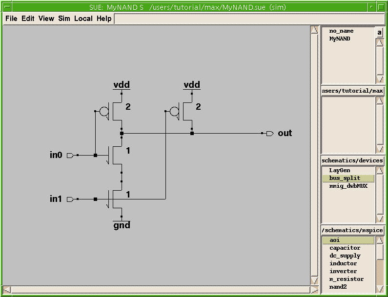
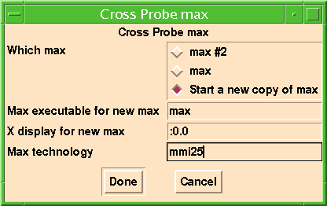
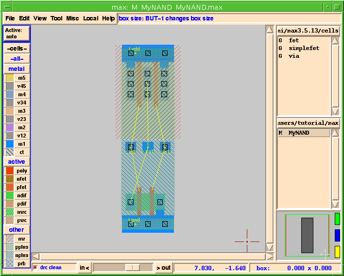
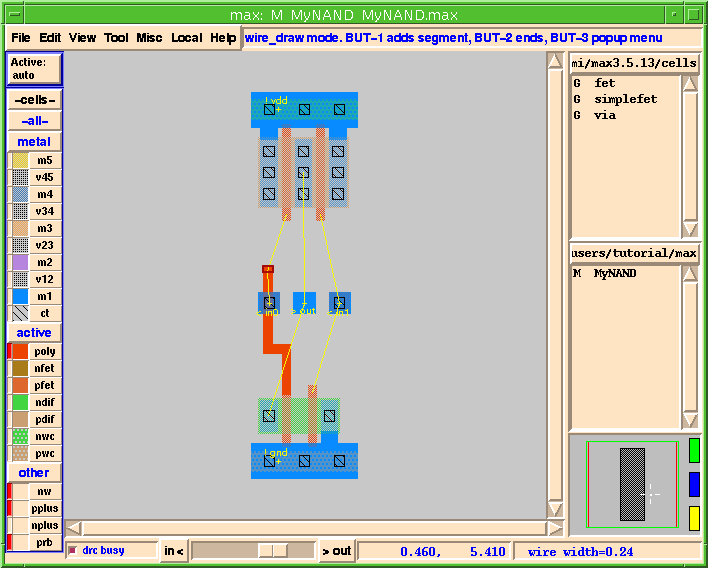
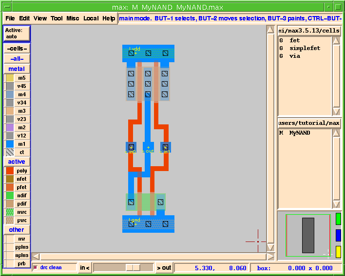
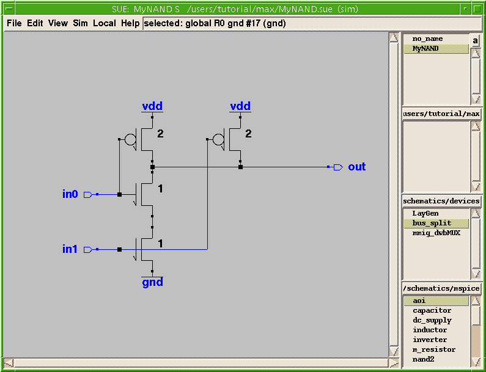

MAX Layout Environment Tutorial |
Part 4
MAX-LS
- MAX-LS, an entry in the chip development suite from Micro Magic Tools, includes ALL of the features included in regular MAX and several added powerful features.
MAX-LS Features
- MAX-LS includes all of the standard MAX features, as well as the following additional ones:
- One reason for the power of MAX-LS is that both MAX and SUE have complete Tcl/Tk interfaces. This means that you can write and execute full Tcl programs in either tool. Tcl also provides a means for inter-program communication.
- SUE and MAX use the notion of "send" commands to talk to each other. Cross-probing is one example of this inter-program communication. Automatic layout generation and fly-lines are also features gained by using both SUE and MAX.
- We are going to use MAX-LS for this next example. Don't worry if you haven't used SUE before. SUE and MAX are both part of the Micro Magic Tools chip design suite, so they have similar interfaces. You can also bring up the SUE tutorial if you wish to learn more about SUE.
Automatic Layout Generation and Fly-lines
- To see how SUE and MAX can work together we are going to bring up a simple NAND gate in SUE.
- This will bring up SUE and automatically load in the
MyNAND.suecircuit.
- Your SUE window should look like Figure 28.
Figure 28: SUE Schematic For "MyNAND"

- The
Cross Probepopup menu will appear.
- For
MAX Technology, fill in mmi25, as shown in Figure 29.Figure 29: Cross Probe Menu

- This will launch a new Xterm window, and start up MAX from that window.
- The
Layout Generatorwindow should now come up. This window has several options.
Generate stdcell layersis a shorthand for either "just give me the devices with flylines" or "give me all of the wells, well contacts, power straps, etc. needed to make a standard cell-like layout".
- If you click on the
Edit Per-Cell Optionsbutton you have various options like using gcells or paint for fets, enable flylines, and automatically folding fets larger than a specified size. If you turnshare_contactson theLayout Generatorwill automatically share contacts and diffusions for you. (For now we don't want to change anything so just hitCancel.)
- The
Edit Stdcell Optionsbox gives you several options for producing standard cell-like layout.
- The
Edit Layers to Generatebox gives you control over what layers theLayout Generatorwill automatically generate for you. This gives YOU, the designer, the ability to control what the tool does for you and what you want total control over.
- Once you are done looking over the many options the
Layout Generatorhas, simply clickDoneand the layout forMyNANDwill automatically be generated for you. It should look like Figure 30.
- Don't worry if you get a MAX error popup. The
.maxrcfile for this tutorial is set up so that it automatically loads thenand2andINVcells we used in the previous section. Those cells were designed for the mmi18 process, and we're using mmi25 for this cell. Click onClosein the popup form.
Figure 30: Layout Generator Result

- Notice that the devices have already been placed and correctly sized. Where possible the
Layout Generatorhas even shared contacts and diffusions for you. Also, notice that there are fly-lines that connect the various nodes together. These fly-lines tell you how to wire things up correctly.
- Now let's wire things up. First, let's wire up the left-most poly gates.
- Did you notice that the fly-line tracked your wire as you drew it? See Figure 31.
Figure 31: Flylines Tracking

- This feature makes it easy to hook up cells correctly. All you need to do is follow the fly-lines!
- Your circuit should now look something like Figure 32.
Figure 32: Wired MyNAND Gate

Cross-Probing with SUE
- Making sure your circuit is wired up correctly is very important. MAX-LS provides flylines to help you accomplish this. But what if you import some layout from another tool, or create the layout without the flylines and you want to make sure it's correct?
- MAX-LS has a powerful feature known as cross-probing. This allows you to select a piece of layout and highlight the corresponding object in the schematic, or vice versa. You can initiate cross-probing from either SUE or MAX.
- To start the cross-probe from SUE you would select
MAX Cross Probe Initfrom theSimmenu just as you did to start up MAX. This time let's set up cross-probing from the MAX side.
- To do this simply:
- Once MAX and SUE are done communicating, SUE will highlight the nodes it and MAX agree upon in blue (see Figure 33), and MAX will highlight the same nodes in white.
Figure 33: Matching Nets in SUE

- Now select the port labeled
in0in the SUE schematic and type k, or selectMAX Cross Probefrom theSimmenu. Notice that the wire labeledin0on the MAX layout is now highlighted in white! See Figure 34.Figure 34: Corresponding Net "in0" In MAX
- You can also cross-probe from MAX to SUE.
- This is yet another way SUE and MAX help you keep track of your design.
Advanced Features
- There are several advanced features found in MAX which were NOT covered in this tutorial.
- For example, customization is possible over a wide range, from minor user preferences (controlled by the
.maxrcfile) to megacell generators. SeeMAX Manualunder theHelpmenu for more details.
To Learn More About MAX and SUE
- To learn more about MAX go to
MAX Manualunder theHelpmenu, or refer to the Micro Magic Tools MAX User Guide.
- To learn more about SUE, go to the
SUE TutorialorSUE ManualunderHelpfor on-line information, or refer to the Micro Magic Tools SUE Tutorial, and the Micro Magic Tools SUE User Guide documentation.
- For additional documentation on any of the Micro Magic Tools chip design suite, use the on-line reference
MMI Documentation Guideunder theHelpmenu.
- And, as always, the best way to really learn a program is to use it. We hope that the Micro Magic Tools programs SUE and MAX will help you do better designs in less time.
| ----- Micro Magic----- |